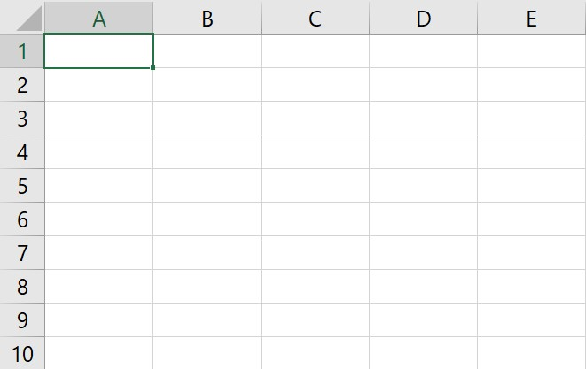

Review: Sel, Baris, Kolom & Visualisasi

•
Baris (Row): Deretan sel mendatar (horizontal) yang ditandai
dengan Angka (1, 2, 3).
•
Kolom (Column): Deretan sel menurun (vertikal) yang ditandai
dengan Huruf (A, B, C).
•
Sel (Cell): Titik pertemuan antara kolom dan baris (contoh:
Sel B3).
•
Visualisasi Grafik: Data dalam tabel dapat diubah menjadi
gambar agar mudah dibaca, seperti Grafik Batang (
Column/Bar)
untuk membandingkan jumlah, atau Grafik Lingkaran (
Pie) untuk
melihat porsi/persentase.
Definisi Pencarian Data
Proses menemukan letak data atau informasi tertentu di dalam
sekumpulan tabel data yang sangat banyak secara otomatis menggunakan
rumus.
Fungsi VLOOKUP & HLOOKUP
Fungsi ini digunakan untuk mencari kata kunci pada ujung tabel dan
mengambil data yang sejajar dengannya; VLOOKUP untuk tabel yang
datanya tersusun menurun (vertikal), sedangkan HLOOKUP untuk
tabel yang datanya tersusun menyamping (horizontal).
Contoh VLOOKUP:
=VLOOKUP("A01", TabelBarang, 2, FALSE)
Contoh HLOOKUP:
=HLOOKUP("Senin", TabelJadwal, 2, FALSE)
Fungsi INDEX & MATCH
Kedua fungsi ini bekerja dengan posisi letak data;
INDEX digunakan untuk mengambil isi data berdasarkan titik
koordinat baris dan kolomnya, sedangkan MATCH digunakan untuk
mencari nomor urut posisi dari sebuah data yang kita ketikkan.
Contoh INDEX: =INDEX(TabelSiswa, 3, 2)
Contoh MATCH: =MATCH("Budi", KolomNama, 0)
Fungsi CHOOSE
Memilih salah satu data dari daftar pilihan yang kita buat sendiri di
dalam rumus, berdasarkan nomor urut (indeks) yang diketikkan.
Contoh:
=CHOOSE(2, "Emas", "Perak", "Perunggu") (Hasilnya
"Perak").
Fungsi Penjumlahan: SUM, SUMIF & SUMIFS
Fungsi pemrosesan angka ini digunakan untuk menjumlahkan data; di mana
SUM menjumlahkan seluruh angka dalam suatu rentang tanpa
syarat, SUMIF menjumlahkan data berdasarkan satu syarat
tertentu, dan SUMIFS menjumlahkan data berdasarkan lebih dari
satu syarat sekaligus.
Contoh SUM: =SUM(B2:B10)
Contoh SUMIF:
=SUMIF(KolomMenu, "Ayam Geprek", KolomHarga)
Contoh SUMIFS:
=SUMIFS(KolomHarga, KolomMenu, "Ayam Geprek", KolomKelas,
"8A")
📝 Kesimpulan
Mengenal struktur baris dan kolom adalah kunci utama sebelum kita bisa
memerintahkan Excel untuk menghitung atau mencari data secara otomatis
menggunakan rumus pencarian (Lookup) maupun posisi koordinat
(Index/Match).